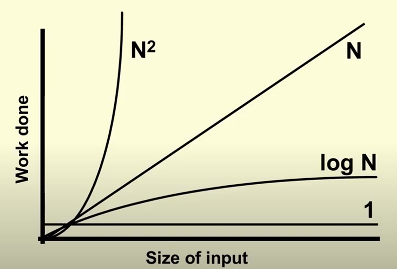

Estimating complexity is an essential part of programming.
It is how we value our code as we write it.
It is how we determine if it is good code or bad code.
The quality of our code can be separated into 4 parts...
- Code maintainability
- Code size
- Space complexity
- Time complexity
Given our solution is the same, these 4 metrics determine our code quality.
By learning the theory behind each type of complexity we are meant to improve our intuition and write better performant code.
Besides maintainability and code size, we can focus on how algorithms take time. This is known as time complexity or runtime.
Time complexity is typically associated with performance more than space.
We have so much RAM nowadays its all about the actual seconds a program runs than how much RAM the program takes.
The order at which programmers determine if code is "good", typically goes like this, legibility -> time taken -> code size and then memory taken.
This order is how programmers tend to estimate the quality of code. That is also a great order to "clean up" your code.
How to calculate runtime
There are two ways to measure time complexity, the theoretical way and the real way.
Time complexity is to measure the number of seconds it takes.
Theoretically we measure this by counting memory changes.
Each memory change takes up time.
We call this time n.
To say f(n) is to say our code is a function of n memory changes.
Lets look at this...
x = 1 x = x - 1 x = 5
In the above function there are 3 memory changes.
This makes our code f(3)
And, yes in the real world each memory change takes up different times. This is because of the randomness of the world.
The computer can be doing another task, slowing down the memory change. There could be an electric flux which speeds up the memory change or some other real world event.
Our computer will never run the code the same every time.
We can measure real runtime by simply starting a timer at the beginning of the code and ending the timer at the end.
Like this...
import time
def sum_numbers(n):
total = 0
for i in range(1, n + 1):
total += i
return total
start_time = time.time()
result = sum_numbers(1000000)
end_time = time.time()
time_taken = end_time - start_time
print(f"Time taken to compute: {time_taken} seconds")
We start the timer before our code block, end it after, then print the time taken.
Buuuut, as memory changes increases the real runtime increases proportionally.
Memory change count and real runtime are so proportionate that even LeetCode can predict both memory change count and runtime.
LeetCode uses true runtime and true memory taken, measuring them like the above, even telling you your time complexity.
It is absolutely beautiful how LeetCode will teach you how to estimate time and space.
Okay, lets talk about the different types of memory changes that determine how long our code will take.
These functions are examples of how memory changes can happen in different quantities in code.
Within 3 lines you can have many different quantities.
For example...
x = 5 # f(1)
for i in range(0, x): #f(n)
print(str(i))
x = x+ 1 # f(1)
x = 0 # f(1)
In this statement we have different types of memory changes. We have f(1) changes and we have f(n) memory changes.
We then add them up.
f(1) + f(x) + f(1) + f(1).
Our goal here is to identify how many memory changes happen in each line of code.
We are going to study the different quantities of memory taken.
Note that as there is exponential change, it looks like this...

Canva
I recommend reading through these functions quickly, getting the gist of what we are doing with functions.
The last section of this article is important. If this is all new to you, you should read it.
f(m)
def fOfM():
x = 1
x = x + 1
x = 5
fOfM()
We simply define f(n) = m, which is 3.
As long as you realize 1 memory change is 1 unit, then you are good to go.
f(n)
def f(n):
for i in range(n): # n memory changes
print(i) #This is the memory change
f(15)
We print i 15 times inside a loop. It happens n times.
Whenever we have an f(n) = n memory change it is usually a loop.
We make these calculation of units in our head while we code.
f(n*m)
def nToTheM(n, m):
for _ in range(n):
for _ in range(m):
print("memory change")
nToTheM(5, 10)
When we are counting higher memory changes, one type is when we loop a loop.
If we loop n times then m times we get n * m.
Here we have 50 changes, much higher than any of the above seen before.
What is wild, LeetCode predicts these theoretical units from its real measurements.
If your theoretical f(n*m) time taken is too high, it will say "exceeds time limit".
f(log(n))
def log_n_function(n):
count = 0
while n > 1:
n //= 2 # memory usage
log_n_function(32)
If we divide the runtime by two for every memory change and stop, we get f(log(n))
Log(32) is 2 ^ n = 32, solving for n in this case. That is the definition of log, 2 ^ what = 32.
Another example of something like this is binary search
def binary_search(arr, target):
low = 0
high = len(arr) - 1
while low <= high:
mid = (low + high) // 2 # this is log(n)
guess = arr[mid]
if guess == target:
return mid
if guess > target:
high = mid - 1
else:
low = mid + 1
return -1
sorted_list = [1, 3, 5, 7, 9, 11]
target_value = 7
result = binary_search(sorted_list, target_value)
The actual formula here is something like 5*log(n) because we have like 5 or more extra operations in the functions happening log(n) times.
But this is an example of when you need to create a log(n) code block.
There are other functions which are log(n) but we can get a picture from these two.
f(n^m)
def n_power_m(n, m, depth=0):
print("memory change")
if depth == m:
return
for i in range(n): # n ^ m here
n_power_m(n, m, depth + 1)
n = 3
m = 2
n_power_m(n, m)
The case of n^m is when you loop a recursion or a function calling itself. You will rarely use this in real programming, but you will absolutely use this in LeetCode.
You may find yourself making a small code block with this complexity.
The 3 notations of complexity: Omega, Theta, O
There are more functions of complexity out there. I wanted to introduce them to you so you could get the gist of time complexity
In reality, each block of code has a best case, a middle case and a worst case.
For example lets look at this...
def nToTheM(n, m):
for _ in range(n):
for _ in range(m):
print("memory change")
nToTheM(1, 1)
Although our worst case is is f(n*m) our best case is f(1) and our middle case is anything between f(1) and f(n*m).
Photo by Algorithm
All functions between f(1) and f(n*m) are middle cases.
Meaning f(m), f(n) are all middle cases with the worst cast being f(n*m)
Of these 3 cases; best, middle, worst we call them Omega (best), Theta (middle) and O (worst).
The are pronounced big Omega, big Theta and big Oh.
All three of these are meant to be calculated in our heads all at once. We are supposed to think of every edge case, estimating the best, middle and worst.
In real programming we calculate complexity in our heads and determine which implementations are best, then we write it.
In LeetCode it will directly tell you what space and time to use in the problem statement
LeetCode will say, "Time complexity must be log(n) and space complexity must be n."
Or whatever the problem requirements are.
LeetCode can be your best friend in time estimation training. All this becomes super intuitive as you train yourself to think this way.
Anywho, I hope you learned something...
CTA: Check out my book on learning code
Happy coding!
Resources
First 2 complexities: How to Write Good Code
Space complexity: What is Space Complexity